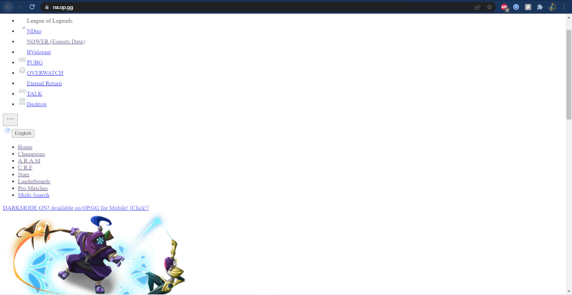

B. Work with CSS:

The website is drastically changed when all css is removed. All background and complementing colours are white.
Text on the page has changed and links are highlighted blue or purple when already clicked. The padding is gone
so everything is right next to eachother. Everything is also a single element per row, so after every new element
it goes to the next line. Nothing is side by side anymore. Nothing is centered. Buttons and dropdowns are default.